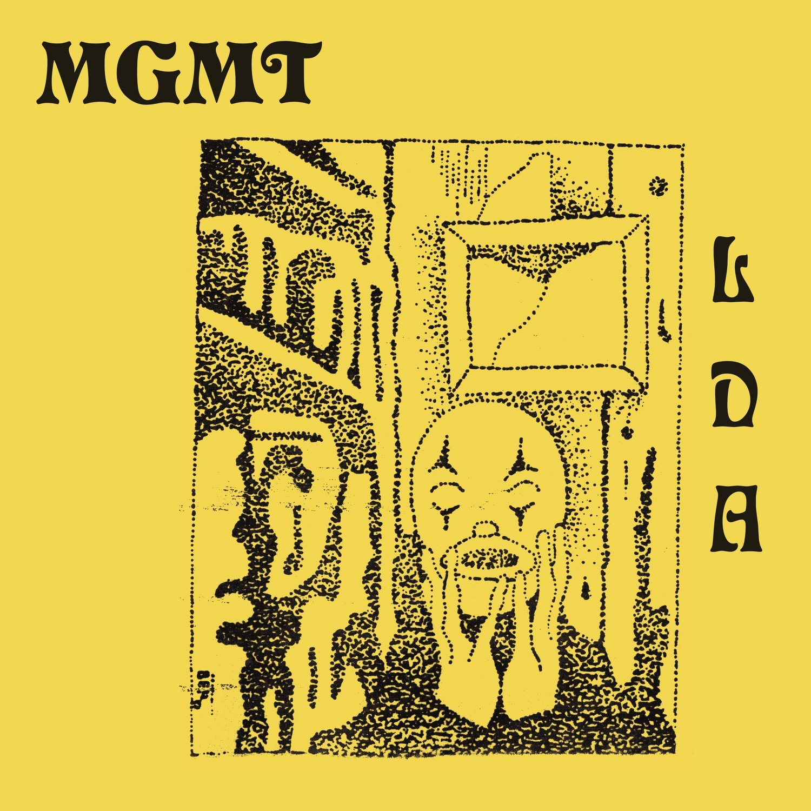

Hola, mi nombre es Rafael ( para otros Rafita, Paredes, Paderes o Abuela), no soy mucho de hablar de mi mismo realmente, tal vez es por que no soy nada interesante, o tal vez por que no tengo esa facilidad para hablar de mi, del como me siento, como soy, o quien soy.
Desde que era muy pequeño era un niño feliz, amigable, ojeroso, y según mi mama, desde el kínder yo era mucho de dar de lo mio a los demás, una cualidad que me ha acompañado desde que tengo memoria, una cualidad que puede ser buena o mala dependiendo del punto de vista, fue gracias a mi peculiar forma de ser con los demás que me he ganado el cariño y apoyo de mis compañeros/amigos de la primaria, secundaria, y hasta la prepa.
Pero a la vez es algo malo, soy muy fácil de manipular honestamente, esto también lo digo pq varias amistades que he tenido me han dicho esto mismo. Hay veces en las que simplemente tengo muchos problemas o cosas encima, y en medio de eso alguien me pide ayuda en cualquier cosa, siento la necesidad de ayudar en eso, de alguna manera u otra, incluso aunque la persona no sea una con la que me lleve, y me siento mal si es que no lo hago, o si no ayudo del todo (Aprovechando la ocasión, si es que hay alguien que este leyendo esto y alguna vez yo no lo haya ayudado o le di el avión, pido perdón desde el fondo de mi alma).
Aun pese a esto, como dije esto me ha traído cosas buenas, por ejemplo, varias amistades, una personita que quiero mucho, y que gracias a esto soy jefe de grupo, lo cual honestamente me hace sentir un poco orgulloso, pero a la vez siempre he tenido la inseguridad de no ser un buen líder, el no ser suficiente o decepcionar a los demás, y es chistoso, esta misma inseguridad la tengo en varios aspectos de mi vida de hecho, o con varias personas, y honestamente, tengo miedo de perder amistades o gente cercana por alguna estupidez que cometa, o algún error, y esto es algo que me ha perseguido desde la secundaria, y ahora se esta manifestando mas.
Cambiando de tema, pasare a enseñar algo un poco mas personal, mis gustos
Mis gustos asquerosos
<
En Musica
Radiohead
Jeff Buckley
Aphex Twin
Billy Joel
Billy Idol
Albumes
Radiohead
Billy Joel
MGMT
Kanye West
In Rainbows
The Stranger
Little Dark Age
La mayoria de estas canciones son importantes para mi de alguna u otra forma, me recuerdan a ciertas personitas de mi vida, situaciones o emociones, el no ser suficiente para los demas, el sentir que estoy solo, el que la mayoria de mis amistades me hablan por lastima, el como nunca lograre algo en mi vida, y el como la gente a la minima oportunidad se aleja de mi, cosa que presiento que pasara con la mayoria de amistades que tengo actualmente una vez acabado el semestre, y no dudo que lo hagan jejej.
 In Rainbows
In Rainbows The Stranger
The Stranger